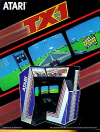

ATARI Coin-Op/Arcade
Systems
1983 - 1985
1983
Atari
first attempt into the new and exciting world of interactive laserdisc
technology, Firefox was based on the movie by the same title starring Clint
Eastwood. Following the storyline of the movie, you have
stolen the secret Soviet fighter and must bring it back safely to the United
States.
1983
Crystal Castles introduced us all to Bentley Bear, the cute
little character who has to recover stones within a haunted castle.
This is a fun and challenging game, lots of pleasant colors and landscapes
made this a game that appealed to almost everyone for fun, cuteness and
a challenge.
1983
Three
Screens, no waiting (except on the long lines to play this game when it
first came out). TX-1 was Atari's entry into fully emersed
surround action. With 3 seperate screens making up an almost
270 degree view, players were fully out racing in an almost life-like environment.
TX-1 was a truly enjoyable game.
1984
Remember when video games were fun and challenging and you
didn't need to do a 25 step combo joystick-fire button sequence to get
your character to do something? Well Paperboy was just such
a game, lots of fun, challenge and laughs. It stars your
average kid next door trying to earn a buck while being chased by dogs,
avoiding cars and doing some dirt biking on the side. This
was the true spirit of Atari Games... fun!
1984
Return
of the Jedi. Based on the third part of the Star Wars Triligy,
Atari brought to arcades every mover goers dream, to actually be a part
of the Star Wars saga. ROTJ takes you through multiple senarios
and challenges from Speedbiking through the Endor forest to piloting the
Millenium Falcon through the structural interior of the newly built second
Death Star.
1985
Peter Pak Rat is yet another enjoyable game which stays within
Nolan's unwritten rule of video games "Make it easy to learn, and hard
to master". Peter Pack Rat gives you a simple premise, find
and pack away as much jumk as possible and earn as many points as possible
before his enemies get him.
MAIN
MENU